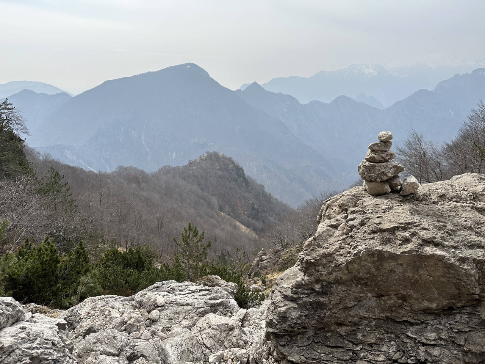
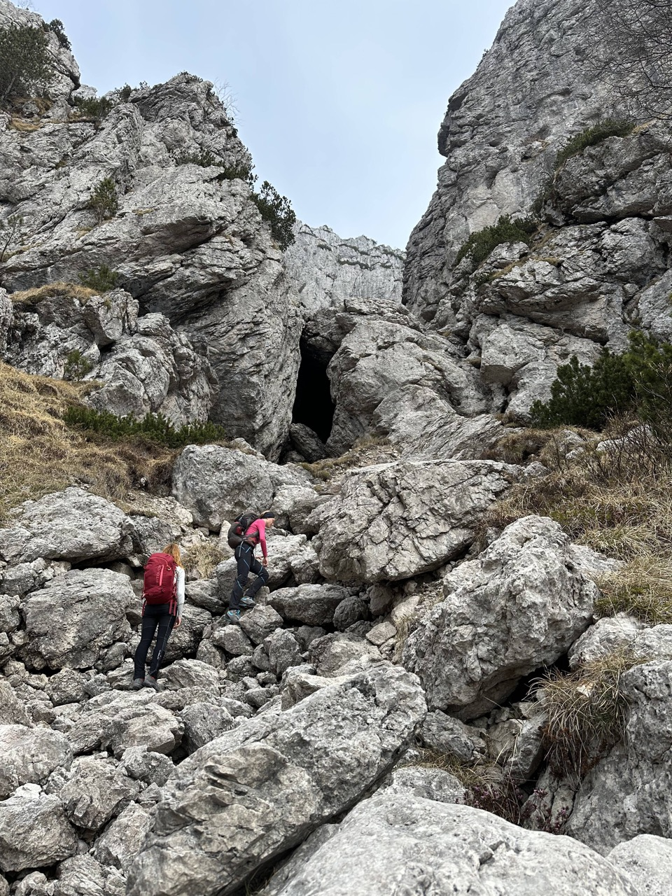
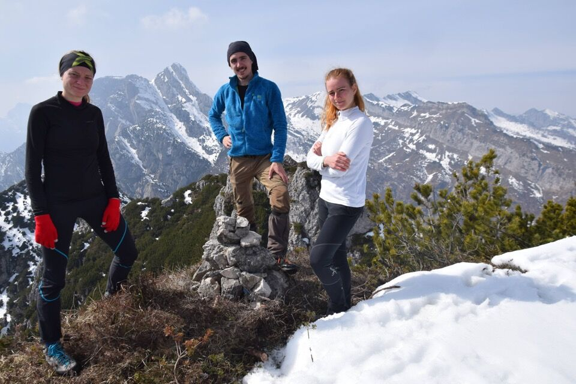
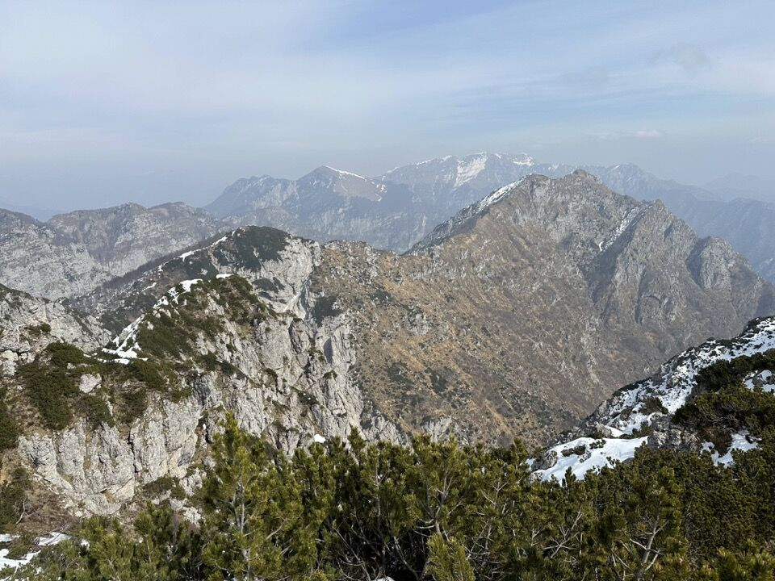

Partiamo da Tramonti di Sopra e con il 386 raggiungiamo la ex stalla Giavons di Mezzo; da lì tagliamo per il bosco, per dove doveva esserci la traccia segnata sulla tabacco, per entrare nel rug dal Giavons, che risaliamo fin sotto le pareti.
C'avviciniamo alle crode.
Uno sguardo all'indietro, verso il Cuel da la Luna e il Pizzo Lovet, con forcella Dodesmala proprio sopra l'omino, a metà fra il Mosean e la cresta che sale al Corda. Il cocuzzolo boscoso a centro foto è il Cocolâr.
Finalmente arriviamo alla claupa, punto in cui si traversa verso sinistra per andare a riprendere il canalone.
C'infiliamo su per un canale che ci porterà, con difficoltà di II, a ridosso della cima.
Un minimo di arrampicata di vuole ogni tanto.
Negli ultimi metri il canale si restringe ancora.
Calchiamo la panoramica e breve cresta e finalmente arriviamo in cima!
Verso Roppa Buffon: ma che bella la val di Fisâr!
La cima svettante a destra è il Frascola, con il canalone percorso dal CAI 392, mentre quella mugosa e bianca in primo piano è la q1682 del Giavons; poco sopra di essa, lungo la cresta che scende dal Frascola verso Sud, il Ciuculon dai Alaç. Sullo sfondo, in mezzo alla foschia, la dorsale che dal Dodesmala sale verso il Dosàip.
Torniamo indietro per la stessa strada.